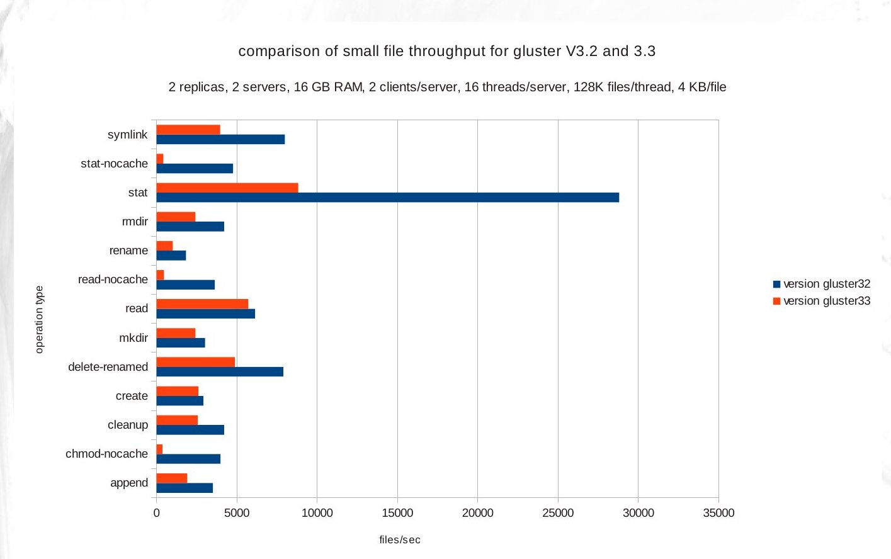

This page describes the smallfile benchmark program. It is a python-based small-file distributed POSIX workload generator which can be used to quickly measure performance for a variety of metadata-intensive workloads across an entire cluster. It has no dependencies on any specific filesystem or implementation AFAIK. It is intended to complement use of iozone benchmark for measuring performance of large-file workloads, and borrows certain concepts from iozone and Ric Wheeler's fs_mark. It was developed by Ben England starting in March 2009, and is now open-source. Here's an example of the kind of data that can be generated with it:

Capabilities include:
- can manage workload generator processes on multiple hosts
- calculates aggregate throughput for entire set of hosts
- can start and stop all workload generator processes at approximately the same time (necessary for accurate aggregate throughput measurement)
- useful for generating "pure" workloads (for example, just creates, or deletes, or setattr)
- easy to extend to new workload types
- provides CLI for scripted use, but workload generator is separate from CLI and can also be invoked directly from a GUI if desired
- supports either fixed file size or random exponential file size
- can capture response time data in .csv format, provides utility to reduce this data to statistics
- has run successfully on Windows, though this functionality is not regularly tested at present.
- writes unique data pattern in all files, verifies data read against this pattern
- in multi-host tests, can force all clients to read files written by different client
For a multi-host test, ALL hosts must provide access to the same shared directory with pathname.
untested on python 3, probably doesn't run yet (exception syntax)
does not work on laptop when hostname is not resolvable via DNS (e.g. dhcp-185-182)
is not accurate on memory-resident filesystem on single host
requires all hosts to have same DNS domain name (plan to remove this restriction)
does not support HTTP access
You must have password-less ssh access between the test driver node and the workload generator hosts if you want to run a distributed (multi-host) test.
You must use a directory visible to all participating hosts to run a distributed test.
To see what parameters are supported by smallfile_cli.py, do "python smallfile_cli.py -h". Boolean true/false parameters can be set to either Y (true) or N (false). Every command consists of a sequence of parameter name-value pairs with the format –name value .
The parameters are:
--operation -- operation name, one of the following:
create -- create a file and write data to it
append -- open an existing file and append data to it
delete -- delete a file
rename -- rename a file
delete_renamed -- delete a file that had previously been renamed
read -- read an existing file
stat -- just read metadata from an existing file
chmod -- change protection mask for file
setxattr -- set extended attribute values in each file
getxattr - read extended attribute values in each file
symlink -- create a symlink pointing to each file (create must be run beforehand)
mkdir -- create a subdirectory with 1 file in it
rmdir -- remove a subdirectory and its 1 file
readdir – scan directories only, don't read files or their metadata
ls-l – scan directories and read basic file metadata
cleanup -- delete any pre-existing files from a previous run
all -- create, append, read, rename and delete each file.
--files -- how many files should each thread process?
--threads -- how many workload generator threads should each invocation_cli process create?
--file-size -- total amount of data accessed per file. If zero then no reads or writes are performed.
--file-size-distribution – only supported value today is exponential, default value is fixed file size.
--record-size -- record size in KB, how much data is transferred in a single read or write system call. If 0 then it is set to the file size.
--top -- top-level directory, all file accesses are done inside this directory tree. If you wish to use multiple mountpoints,provide a list of top-level directories separated by comma (no whitespace).
--host-set -- comma-separated set of hosts used for this test (default is current host name), no domain names allowed
--files-per-dir -- maximum number of files contained in any one directory
--dirs-per-dir -- maximum number of subdirectories contained in any one directory
--hash-into-dirs – default N, if Y then assign next file to a directory using a hash function, otherwise assign next –files-per-dir files to next directory
--permute-host-dirs – default N, if Y then have each host process a different subdirectory tree than it otherwise would (see below for directory tree structure).
--same-dir -- boolean, default N, if Y then threads will share a single directory
--network-sync-dir – don't need to specify unless you run a multi-host test and the –top parameter points to a non-shared directory (see discussion below)
--xattr-size -- size of extended attribute value in bytes (names begin with 'user.smallfile-')
--xattr-count -- number of extended attributes per file
--prefix -- a string prefix to prepend to files (so they don't collide with previous runs for example)
--suffix -- a string suffix to append to files (so they don't collide with previous runs for example)
--finish -- boolean, default Y, if Y, thread will complete all requested file operations even if measurement has finished
--stonewall -- boolean, default Y, if Y then thread will measure throughput as soon as it detects that another thread has finished
--remote-pgm-dir – don't need to specify this unless the smallfile software lives in a different directory on the target hosts and the test-driver host.
--pause -- integer (microseconds), default 0, if non-zero each thread will delay for this many microseconds before starting next file
So for example, if you want to run smallfile_cli.py on 1 host with 8 threads each creating 2 GB of 1-MB files, you can use these options:
# python smallfile_cli.py --operation create --threads 8 --file-size 1024 --files 2097 --top /mnt/gfs/smf
To run a 4-host test doing same thing:
# python smallfile_cli.py --operation create --threads 8 --file-size 1024 --files 2097 --top /mnt/gfs/smf \
--host-set host1,host2,host3,host4 Errors encountered by worker threads will be saved in /var/tmp/invoke-N.log where N is the thread number. After each test, a summary of thread results is displayed, and overall test results are aggregated for you, in three ways:
files/sec – only metric relevant to all tests
IOPS – application I/O operations per second, rate at which benchmark performed reads/writes
MB/s – megabytes/sec, rate at which application transferred data
Users should never need to run smallfile.py -- this is the python class which implements the workload generator. Developers can run this module to invoke its unit test however:
# python smallfile.py
To run just one unit test module run
# python -m unittest smallfile.Test.test_c3_Symlink
Use with non-networked filesystems
There are cases where you want to use a distributed filesystem test on host-local filesystems. One such example is virtualization, where the “local” filesystem is really layered on a virtual disk image which may be stored in a network filesystem. The benchmark needs to share certain files across hosts to return results and synchronize threads. In such a case, you specify the –network-sync-dir directory-pathname parameter to have the benchmark use a directory in some shared filesystem external to the test directory (specified with –top parameter). By default, if this parameter is not specified then the shared directory will be the subdirectory network-dir underneath the directory specified with the –top parameter.
In some filesystems, the first thread that starts running will be operating at memory speed (example: NFS writes) and can easily finish before other threads have a chance to get started. This immediately invalidates the test. To make this less likely, it is possible to insert a per-file delay into each thread with the --pause option so that the other threads have a chance to participate in the test during the measurement interval. It is preferable to run a longer test instead, because in some cases you might otherwise restrict throughput unintentionally. But if you know that your throughput upper bound is X files/sec and you have N threads running, then your per-thread throughput should be no more than N/X, so a reasonable pause would be something like 3X/N microseconds. For example, if you know that you cannot do better than 100000 files/sec and you have 20 threads running,try a 60/100000 = 600 microsecond pause. Verify that this isn't affecting throughput by reducing the pause and running a longer test.
Before a test even starts, the smallfile benchmark ensures that the directories needed by that test already exist (there is a specific operation type for testing performance of subdirectory creation and deletion). If the top directory (specified by –top parameter) is T, then the top per-thread directory is T/host/dTT where TT is a 2-digit thread number and “host” is the hostname. If the test is not a distributed test, then it's just whatever host the benchmark command was issued on, otherwise it is each of the hosts specified by the –host-set parameter. The first F files (where F is the value of the –files-per-dir) parameter are placed in this top per-thread directory. If the test uses more than F files/thread, then at least one subdirectory from the first level of subdirectories must be used; these subdirectories have the path T/host/dTT/dNNN where NNN is the subdirectory number. Suppose the value of the parameter –subdirs-per-dir is D. Then there are at most D subdirectories of the top per-thread directory. If the test requires more than D(F+1) files per thread, then a second level of subdirectories will have to be created, with pathnames like T/host/dTT/dNNN/dMMM . This process of adding subdirectories continues in this fashion until there are sufficient subdirectories to hold all the files. The purpose of this approach is to simulate a mixture of directories and files, and to not require the user to specify how many levels of directories are required.
The use of multiple mountpoints is supported. This features is useful for testing NFS, etc.
Note that the test harness does not have to scan the directories to figure out which files to read or write – it simply generates the filename sequence itself. If you want to test directory scanning speed, use readdir or ls-l operations.
Some applications require that many threads, possibly spread across many host machines, need to share a set of directories. The --same-dir parameter makes it possible for the benchmark to test this situation. By default this parameter is set to N, which means each thread has its own non-overlapping directory tree. This setting provides the best performance and scalability. However, if the user sets this parameter to Y, then the top per-thread directory for all threads will be T instead of T/host/dTT as described in preceding section.
For applications which create very large numbers of small files (millions for example), it is impossible or at the very least impractical to place them all in the same directory, whether or not the filesystem supports so many files in a single directory. There are two ways which applications can use to solve this problem:
insert files into 1 directory at a time – can create I/O and lock contention for the directory metadata
insert files into many directories at the same time – relieves I/O and lock contention for directory metadata, but increases the amount of metadata caching needed to avoid cache misses
The –hash-into-dirs parameter is intended to enable simulation of this latter mode of operation. By default, the value of this parameter is N, and in this case a smallfile thread will sequentially access directories one at a time. In other words, the first D (where D = value of –files-per-dir parameter) files will be assigned to the top per-thread directory, then the next D files will be assigned to the next per-thread directory, and so on. However, if the –hash-into-dirs parameter is set to Y, then the number of the file being accessed by the thread will be hashed into the set of directories that are being used by this thread.
In real life, users don't create files that all have the same size. Typically there is a file size distribution with a majority of small files and a lesser number of larger files. This benchmark supports use of the random exponential distribution to approximate that behavior. If you specify
–file-size-distribution exponential –file-size S
The meaning of the –file-size parameter changes to the maximum file size (S KB), and the mean file size becomes S/8. All file sizes are rounded down to the nearest kilobyte boundary, and the smallest allowed file size is 1 KB. When this option is used, the smallfile benchmark saves the seed for each thread's random number generator object in a .seed file stored in the TMPDIR directory (typically /var/tmp). This allows the file reader to recreate the sequence of random numbers used by the file writer to generate file sizes, so that the reader knows exactly how big each file should be without asking the file system for this information. The append operation works in the same way. All other operations are metadata operations and do not require that the file size be known in advance.
THere are two types of caching effects that we wish to avoid, data caching and metadata caching. If the average object size is sufficiently large, we need only be concerned about data caching effects. In order to avoid data caching effects during a large-object read test, the Linux buffer cache on all servers must be cleared. In part this is done using the command: "echo 1 > /proc/sys/vm/drop_caches" on all hosts. However, gluster has its own internal caches. To evict all prior data from the cache, the simplest method is to just use iozone to write a large amount of data into some files in the gluster filesystem, then delete them. For example, if the gluster 3.2 server caches 1 GB of data then the amount of data written should be roughly 2 GB/server and the number of files used should be roughly 8 times the number of servers. Use of many separate files ensures that this cache eviction data is spread across all servers approximately equally.
All tests display a "files/sec" result. If the test performs reads or writes, then a "MB/sec" data transfer rate and an "IOPS" result (i.e. total read or write calls/sec) are also displayed. Each thread participating in the test keeps track of total number of files and I/O requests that it processes during the test measurement interval. These results are rolled up per host if it is a single-host test. For a multi-host test, the per-thread results for each host are saved in a file within the --top directory, and the test master then reads in all of the saved results from its slaves to compute the aggregate result across all client hosts. The percentage of requested files which were processed in the measurement interval is also displayed, and if the number is lower than a threshold (default 70%) then an error is raised.
response
times for operations on each file are saved by thread in .csv
form. For example, you can turn these into an X-Y
scatterplot so that you can see how response time varies over
time, to use:
#
python smallfile_cli.py --response-times Y
#
ls -ltr /var/tmp/rsptimes*.csv
You
should see 1 .csv file per thread. These files should be in
a format
that can be loaded into any spreadsheet application,
such as Excel, and
graphed. An x-y scatterplot can be
useful to see changes over time in response time.
There are many existing performance test benchmarks. I have tried just about all the ones that I've heard of. Here are the ones I have looked at:
Bonnie++ -- works well for a single host, but you cannot generate load from multiple hosts because the benchmark will not synchronize its activities, so different phases of the benchmark will be running at the same time, whether you want them to or not.
iozone -- this is a great tool for large-file testing, but it can only do 1 file/thread in its current form.
postmark -- works fine for a single client, not as useful for multi-client tests
grinder -- has not to date been useful for filesystem testing, though it works well for web services testing.
JMeter – has been used successfully by others in the past.
fs_mark -- Ric Wheeler's filesystem benchmark, is very good at creating files
fio -- Linux test tool -- broader coverage of Linux system calls particularly around async. and direct I/O
A cluster-aware test tool has to:
start threads on all hosts at same time
stop measurement of throughput for all threads at the same time
be easy to use in all file system environments
be highly portable
have very low overhead
not require threads to synchronize (be embarrassingly parallel)
Although there may be some useful tests that involve thread synchronization or contention, but we don't want the tool to force thread synchronization or contention for resources. In order to run prolonged small-file tests (which is a requirement for scalability to very large clusters),, each thread has to be able to use more than one directory. Since some filesystems perform very differently as the files/directory ratio increases, and most applications and users do not rely on having huge file/directory ratios, this is also important for testing the filesystem with a realistic use case. This benchmark does something similar to Ric Wheeler's fs_mark benchmark with multiple directory levels. This benchmark imposes no hard limit on how many directories can be used and how deep the directory tree can go. Instead, it creates directories according to these constraints:
files (and directories) are placed as close to the root of the directory hierarchy as possible
no directory contains more than the number of files specified in the --files-per-dir test parameter
no directory contains more than number of subdirectories specified in the --dirs-per-dir test parameter
A single directory is used to synchronize the threads and hosts. This may seem problematic, but we assume here that the file system is not very busy when the test is run (otherwise why would you run a load test on it?). So if a file is created by one thread, it will quickly be visible on the others, as long as the filesystem is not heavily loaded.
If it's a single-host test, any directory is sharable amongst threads, but in a multi-host test only a directory shared by all participating hosts can be used. If the –top test directory is in a network-accessible file system (could be NFS or Gluster for example), then the synchronization directory is by default in the network_shared subdirectory by default and need not be specified. If the –top directory is in a host-local filesystem, then the –network-sync-dir option must be used to specify the synchronization directory. When a network directory is used, change propagation between hosts cannot be assumed to occur in under two seconds.
We use the concept of a "starting gate" -- each thread does all preparation for test, then waits for a special file, the "starting gate", to appear in the shared area. When a thread arrives at the starting gate, it announces its arrival by creating a filename with the host and thread ID embedded in it. When all threads have arrived, the controlling process will see all the expected "thread ready" files, and will then create the starting gate file. When the starting gate is seen, the thread pauses for a couple of seconds, then commences generating workload. This initial pause reduces time required for all threads to see the starting gate, thereby minimizing chance of some threads being unable to start on time. Synchronous thread startup reduces the "warmup time" of the system significantly.
We also need a checkered flag (borrowing from car racing metaphor). Once test starts, each thread looks for a stonewall file in the synchronization directory. If this file exists, then the thread stops measuring throughput at this time (but can (and does by default) optionally continue to perform requested number of operations). Consequently throughput measurements for each thread may be added to obtain an accurate aggregate throughput number. This practice is sometimes called "stonewalling" in the performance testing world.
Synchronization operations do not require the worker threads to read the synchronization directory. For distributed tests, the test driver host has to check whether the various per-host synchronization files exist, but this does not require a readdir operation. The test driver does this check in such a way that the number of file lookups is only slightly more than the number of hosts, and this does not require reading the entire directory, only doing a set of lookup operations on individual files, so it's O(n) scalable as well.
For either single-host or multi-host tests, each test thread is implemented as a smf_invocation object and all thread state is kept there. Results are returned by using python "pickle" files to serialize the state of these per-thread objects containing details of each thread's progress during the test. The pickle files are stored in the shared synchronization directory. This restriction could be lifted if it was important enough but that's how it works today.